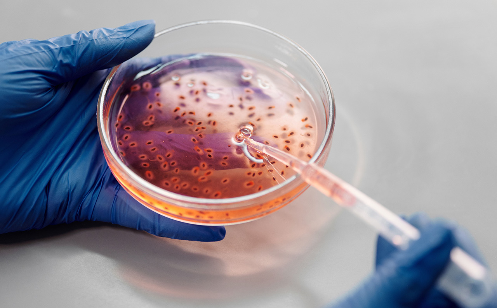
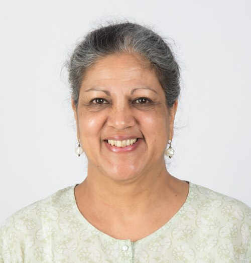
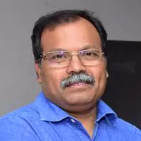
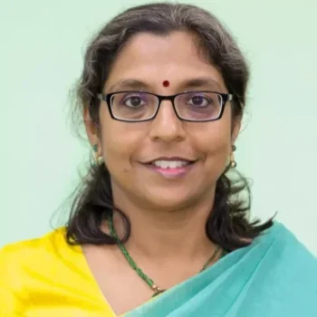
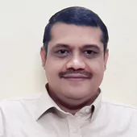
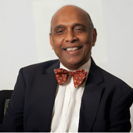
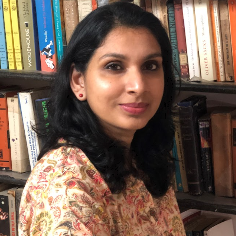
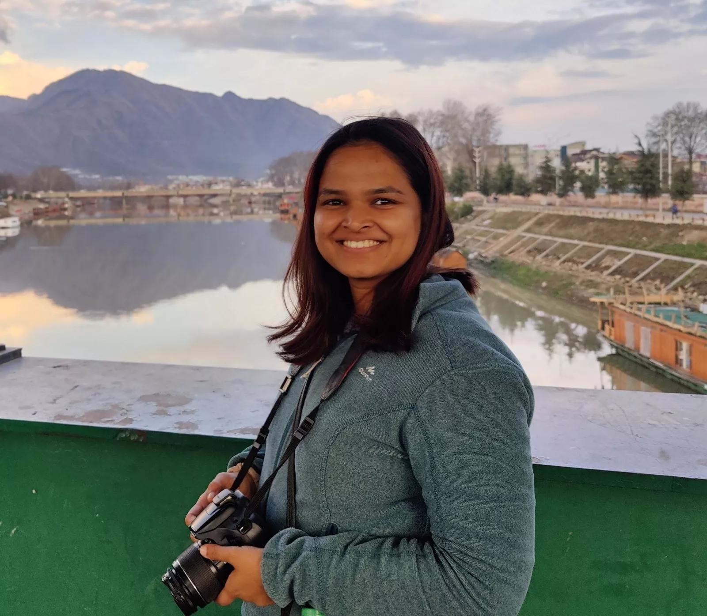

Biomedical Sciences Research Grant
The Sree Ramakrishna Paramahamsa Research Grant in Biomedical Sciences was introduced in 2019 and has since completed four successful rounds of competition. Since 2020, the program has shifted its focus towards supporting “bench to bedside” translational research, which aims to bridge the gap between fundamental scientific discoveries and their application in clinical settings for the benefit of patients. This new approach reflects our commitment to funding innovative research projects with the potential to improve healthcare outcomes and advance medical knowledge.

Grant at a Glance
The grant call for 2026 is currently paused.
Grant Name: Sree Ramakrishna Paramahamsa Research Grant
Type of Research: Biomedical, Translational
Level of Funding: Upto Rs. 3 crores
Duration of Funding: 3 years
Application Process:
The grant follows a two-step application process:
Preliminary Submission: Applicants must first submit a preliminary form. Submissions will be reviewed for eligibility and alignment with the grant’s remit, and then screened by the committee for competitiveness and potential impact.
Full Application: Selected applicants will be invited to submit a full application. These will undergo expert peer review, after which the committee will shortlist candidates for interviews. Final award decisions will be made following the interview stage.
Important Timeline

Applications for a three-year grant are invited from interested individuals and teams from not-for-profit research organisations.
The call is for one grant in any branch of science and technology for cutting-edge “Bench to Bedside” translational projects leading to interventions that improve the health of individuals and the public. Any project designed to address a focused disease related topic with cutting-edge techniques and analysis resulting in translational solutions to illness or clinical problems will be eligible to apply.
However, climate change, agricultural sciences and ecological sciences are excluded from the ambit of this call.
SreePVF expects that proposals submitted under this funding initiative describe ambitious projects that lead to substantial benefit to human health with measurable impact. The grant is envisaged as an enabler to deliver ready to deploy solutions which can lead to successful bed-side applications. A key requirement of the grant is that the proposed research should, by the end of the 3-year grant period, lead to tangible outcomes, that can immediately be translated into innovative tools/products/treatments/interventions that are easily accessible and cost-effective, thus benefitting large sections of the population.
Proposals for less than three years will not be considered.
Eligibility of Organizations: We are open to accepting applications from a variety of organizations including universities, R&D institutions, medical centers, and non-profit research organizations in India. Start-Ups and other for-profit entities are eligible for SreePVF funding ONLY as co-applicants.
Collaborations and Partnerships: Whether you are applying as a team or a single entity, you can submit proposals from multiple institutions. We encourage international collaborations, but the lead organization must be based in India. We want to ensure that the collaboration adds value to the proposal and cannot be carried out in India alone.
Minimum Eligibility Criteria: While we are looking for creative and innovative ideas, applicants should also have a PhD/MD/MS or equivalent degree to ensure that they have the necessary qualifications and experience.
Salary and Space: As there is no salary provided with the grant, we require that applicants have already secured salary and space from their Host Institution before applying.
Age Limit: The Principal Investigator should be below 50 years of age, but we do allow for a five-year age exception for women applicants.
No Duplication of Support: We are committed to supporting innovative ideas and do not want to duplicate funding that is already available. If you have received funding from other sources for similar work, we will only consider proposals that demonstrate added value and impact.
Terms and Conditions: All successful awards are contingent upon acceptance of our non-negotiable Terms and Conditions. To avoid delays in accepting the award and initiating the projects, we advise applicants to consult and review these terms with the appropriate departments in their institution early on in the process.
Maximum Budget: The maximum budget for one grant is Rs 3 Crores.
Tranche Disbursement: The grant will be disbursed in three tranches, with each tranche being no more than Rs. 1.0 crore per year over three years.
Eligible Costs: We fund a range of expenses, including capital expenditure (equipment), personnel costs, consumables, travel (local and international), contingency, overheads, outsourcing, and other costs as required by the project.
Flexibility in Allocation: At SreePVF, we give you the freedom to allocate the budget as you see fit, as long as the requested costs are strongly justified and commensurate with the proposed research.
Primary Host Institution: The grant will only be given to the primary Host Institution in India, and money disbursement in case of multi-institutional grants is the responsibility of the primary lead institution, which must put in place a suitable mechanism.
Important Note: Budget indicated will be inclusive of all applicable taxes (GST and TDS included) and Institutional overheads.
Translational Value: How soon can the proposed research benefit humans?
Novelty: Does the proposed work enrich the field?
Feasibility: Is the proposal feasible based on the expertise of the Principal Investigator (PI) and the collaborators?
Vigor and Rigor: How strong are the proposed experiments?
Competitiveness: How does the proposal compare to others in the cohort?
Value of Outcomes: What impact will the proposed research have on human health?
Click here to download the preliminary application form.
Soft copies of the duly filled-in preliminary application must be emailed as a single consolidated PDF file with all necessary signatures to sreepvfgrants@gmail.com before 21 August 2025. The file name of the submitted application must be the full name of the lead applicant in the format “first name last name.pdf”.
In this webinar, Grants Manager Dr. Ponnari Gottipati walks us through the Sree Ramakrishna Paramahamsa Research Grant in the Translational Biomedical Research category, sharing insights on:
- what we look for in applications
- what projects we have supported in the past
- what “translational research” truly means by spotlighting the projects by our past and current awardees
Watch this video for an overview of the Sree Ramakrishna Paramahamsa Translational Research Grant in the Biomedical Sciences category –
Selection Committee
A Committee of eminent scientists has been constituted to help the Foundation in reviewing the applications.
Chair
Members of the Committee (2024 onwards)

Professor Jyotsna Dhawan
CSIR-CCMB, Hyderabad; inSTEM, Bengaluru

Professor K Thangaraj
CSIR-CCMB, Hyderabad

Professor Radha Rangarajan
CSIR-CDRI, Lucknow

Dr. Venkatasubramanian Ganesan
NIMHANS, Bengaluru

Dr Gullapalli Nageswara Rao
L V Prasad Eye Institute, Hyderabad
Secretary:

Dr. Ponnari Gottipati
Head, Grants & Strategy, Sree PVF Foundation

Dr. Gayathri Sreedharan
Grants and Communications Associate, Sree PVF Foundation
Members of the Committee (2019 - 2023)
Previous Awardees
2019: Prof Vidita Vaidya, TIFR Mumbai and her collaborator for their work studying mitochondrial metabolic modulations due to early life stress and ways to revert the same.
2020: Prof Vandana Sharma, IIT Hyderabad and her collaborators for building a 3D-Imaging-based Vein Intrusion Guide System for Pediatric and Geriatric Healthcare.
2021: A Multidisciplinary collaborative team led by Dr Falguni Pati (IIT Hyderabad), Dr Sayan Basu & Dr Vivek Singh (L V Prasad Eye Institute) and Dr Kiran Bokara (CCMB, Hyderabad) for developing a Biomimetic hydrogel for the treatment of blinding corneal diseases.
2022: Dr. Akanksha Chaturvedi from National Centre for Cell Sciences for researching and developing a novel high-affinity human monoclonal antibody cocktail against the Rabies virus for efficacious post-exposure prophylaxis
2022: Prof. Radhakant Padhi from the Indian Institute of Science, for working to create a customizable and intelligent artificial pancreas for Type-1 Diabetic Patients of India, along with a cost-effective insulin pump.
2023: Dr. Ambarish Ghosh, Indian Institute of Science, Bengaluru and his collaborators for innovating a Nanorobotic system for oral health.
2023: Dr. Vidya Ramkumar, Sri Ramachandra Institute of Higher Education and Research, Chennai and her collaborators for developing Smartphone based ‘Speech/speech spectrum in Noise’ hearing screening tests for early identification of hearing loss in children.
2024: Dr. Jyotsnendu Giri, Indian Institute of Technology, Hyderabad and collaborators for developing autologous Platelet-rich Plasma (PRP) loaded personalized wound care patch at patient bedside for effective and affordable burn wound care.
2024: Dr Arun Anirudhan V, Sree Chitra Tirunal Institute for Medical Sciences and Technology (SCTIMST), Trivandrum and collaborators for design and development of a comprehensive low-cost simulation lab for advanced cardiopulmonary resuscitation, respiratory system, vascular access, critical care, interventional catheterization, and ultrasound training.
2024: Dr Gopinath Packirisamy, Indian Institute of Technology Roorkee and collaborators for the development of biosensor for non-invasive and early-stage detection of bladder cancer using urine samples.
2025: Dr. Sutharsan Govindarajan, SRM University, Andhra Pradesh, and collaborators for Genomic Surveillance-Driven Phage Therapy: A Bench-to-Bedside Approach Against Drug-Resistant Pathogens.